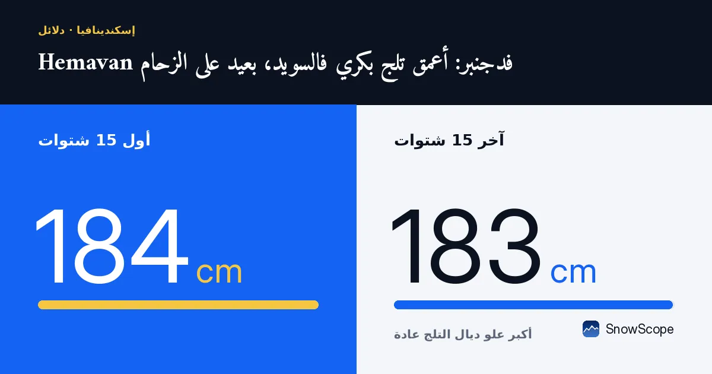

Hemavan فدجنبر: أعمق تلج بكري فالسويد، بعيد على الزحام
Hemavan كتقع فـ جبال السويد قرب الحد ديال النرويج وكتبني التلج ديال دجنبر أعمق من أي محطة نوردية قارنّا معاها. فـ يوم عادي 15 دجنبر، الجهة الوسطانية (799 م) كتحتفظ ب 82 سم، و فـ كـ واحد من 46 شتا ديال السجلات ديالنا تلك الارتفاع كان عندها تلج 30 سم فلا أكثر قبل العيد بـ شوية.
شوف توقعات التلج مباشرة ديال Hemavan فالتطبيق ديال SnowScopeالعلو ديال التلج، التنبيهات والخريطة 3D، فابور.
واش دجنبر هنا أحسن من الألب و المناطق النوردية الأخرى
القوة ديال Hemavan هي الارتفاع مع العرض. القاعدة كتبدا من 462 م، الجهة الوسطانية من 799 م، و الجوج من 1136 م. تلك الفرقة ديال الارتفاع كتشد التلج فـ كـ المستويات، و بعيد فـ الشمال فـ لابلاند السويد، التلج دجنبر موثوق فيه. فـ الجهة الوسطانية، 100 % من 46 شتا عندها 30 سم فلا أكثر من 8 دجنبر فصاعدا. فـ الجوج كان كـ شتا فـ كـ أسبوع دجنبر.
شد الحال مع Åre، محطة السويد الكبيرة: الجهة الوسطانية ديال Åre (853 م) عندها غيط 40 سم فـ يوم عادي 15 دجنبر، و التلج فـ وسط دجنبر كان آمن فـ 89 % من الشتوات هناك، مافي 100 %. للـ سكيرز اللي خسرو من دجنبر رقيق فـ المحطات الأخرى، Hemavan كتعطيهم اليقين.


القاعدة كتاخد المخاطرة؛ الجهة الوسطانية و الجوج آمنين
بداية دجنبر فـ المستوى القاعدي (462 م) ما كانش مضمونة: 78 % من الشتوات عندها 30 سم فلا أكثر فـ الأسبوع الأول. بل من 8 دجنبر فصاعدا، التغطية طفرت لـ 89 %، ثمة 91 % بـ أسبوع العيد. إذا وصلتي قبل 8 دجنبر، بقايي فـ الارتفاع. الجهة الوسطانية و الجوج عندهم تغطية فـ كـ شتا واحد من بداية دجنبر غيك نهاية الشهر.
فـ أسبوع العيد نفسو، صورة العمق كتحسّن فـ كـ المحطات. القاعدة تاع التقليد 62 سم فـ 24 دجنبر؛ الجهة الوسطانية 93 سم؛ الجوج 128 سم. فـ 96 % من شتوات ديالنا، الجهة الوسطانية عندها 60 سم فلا أكثر فـ أسبوع العيد—بلاد التلج الطري الحقيقي.
الماء مخزّن فـ الارتفاع، منطلق فـ الربيع
التلج الغميق دجنبر هنا ماشي غيط للـ سكي؛ هو ماء مخزّن فـ الجبال. تلك الحزمة ديال التلج تاع التقليد تدوم فـ الربيع لـ أن أعمق شهر فـ الجهة الوسطانية هو أبريل، كاين الارتفاع تاع التقليد يوصل لـ 161 سم. الشتا اللي فات، و بزاف من محطات الألب كانت كتعاني، Hemavan احتفظت بـ 88 سم فـ الجهة الوسطانية فـ 15 دجنبر و ما زالت كتبني.
النزعة ديال المدى الطويل كتضهر تحول خفيف. العمق دجنبر فـ الجهة الوسطانية كان متوسطو 89 سم فـ أول 15 شتا من السجلات ديالنا بل 81 سم فـ آخر 15 شتا. لكن حتى فـ السنين الجديدة، كـ أسبوع عيد عندو 30 سم هناك. التلج عندو مقاومة.
منطقة صغيرة، فائدة كبيرة: أشخاص أقل، تكلفة منخفضة
Hemavan عندها 37 كم من البيستات المرسومة و 9 ليفطات. هاد ماشي وجهة للـ لي كيبحثو على الحجم. هي محطة ديال قرية، هادية قبل العيد، بعيدة على المدن السويدية الكبيرة و حتى أبعد من المطارات الدولية. التضحية كتستاهل إذا كنتي كتفضلي التلج الطري و السلام على الامتداد و الحياة الليلية.
أسعار الليفطات كتباع بـ الديناميكية على الأنترنت، و ما قدرنا ما نؤكدو معدل محدد فـ 13 نونبر 2026. شد الشوب الرسمي ديال المشغّل لـ الأسبوع ديالك. منطق التنقل كتاخد أهمية هنا أكثر من محطة ديال الأرض المنخفضة: خطط اللـ رحلة ديالك بـ بدري، لأن الشمال ديال السويد عندو رحلات شتوية محدودة و تحويلات طويلة.
أي أسبوع، أي ارتفاع، أي بيستات
أي أسبوع من وسط دجنبر لـ نهاية دجنبر كيشتغل فـ الجهة الوسطانية و فوق. إذا مجبور تسكي فـ القاعدة، وصل من 8 دجنبر فصاعدا. الجوج (1136 م) آمن من التلج من بداية الشهر و كيتاخد الأكثر: 112 سم تاع التقليد فـ 15 دجنبر، 139 سم بـ ليلة رأس السنة.
الموقع كيقع فـ تضاريس كاين فـ السكي خارج البيستات كيكون آغري و خطير. التلج الغميق و منحدرات الجبل الحادة كتخلقو خطر الانهيارات. قبل ما تنطقي خارج البيستات المرسومة، قري التوقعات ديال الانهيارات السويدية من Lavinprognoser و جيبي معاك المعدات الصحيحة ديال الأمان.
نصايح للي كيتزلجو
- الجهة الوسطانية و الجوج آمنين من التلج من 1 دجنبر. القاعدة أحسن من 8 دجنبر فصاعدا.
- زورو فـ أسبوع العيد حيت التلج يكون أعمق: الجهة الوسطانية عندها تاع التقليد 93 سم فـ 24 دجنبر.
- احجزو التنقل و الليفطات بـ بدري؛ الشمال ديال السويد عندو رحلات شتوية قليلة و تحويلات طويلة.
- تضاريس خارج البيستات كيكون مغري بل خطير. شد النشرة ديال الانهيارات السويدية قبل ما تنطقي خارج البيستات، و جيبي معاك بيكون، سوندي و فأس.
- هاد وجهة هادية، محطة صغيرة ديال الهروب، ماشي محطة للسكيرز لي كيحتاجو التنويع و الحياة الليلية كـ كـ ليل.
على هاد الأرقام
العلو ديال التلج فالمحطات هو أكثر تلج فالجهة الفوقانية فالتاريخ المكتوب؛ هادو تقديرات لمنطقة، ماشي قياس فنقطة وحدة. التوقعات يمكن تتبدل. ديما شوف النشرة الرسمية ديال الانهيارات قبل ما تخرج من البيست.
النشرات الرسمية ديال الانهيارات: Lavinprognoser (Naturvårdsverket)
كيفاش تستاشهد بهاد المقال
للبحث، التعليم ولا الصحافة: الأرقام والرسومات تقدر تعاود تخدم بيهم بحرية تحت CC BY 4.0 مع هاد الاستشهاد.
SnowScope (2026), Hemavan فدجنبر: أعمق تلج بكري فالسويد، بعيد على الزحام, https://snowscope.app/blog/ar/2026/11/hemavan-december-skiing-lapland-deep-snow-budget.html, تشاف ف 2026-11-14
SnowScope (Atlas Labs). (2026, November 14). Hemavan فدجنبر: أعمق تلج بكري فالسويد، بعيد على الزحام. SnowScope snow reports. https://snowscope.app/blog/ar/2026/11/hemavan-december-skiing-lapland-deep-snow-budget.html
BibTeX
@misc{snowscope2026hemavandecemberskiinglap,
author = {{SnowScope (Atlas Labs)}},
title = {Hemavan فدجنبر: أعمق تلج بكري فالسويد، بعيد على الزحام},
year = {2026},
month = nov,
howpublished = {\url{https://snowscope.app/blog/ar/2026/11/hemavan-december-skiing-lapland-deep-snow-budget.html}},
note = {Published 2026-11-14 15:34 UTC; accessed 2026-11-14}
}· CC BY 4.0 · الطريقة، الداتا والأدوات →
Hemavan: التلج والحرارة حسب العلو، هاد الشتا مقارنة مع اللي فاتت (الأدوات) →
تابع Hemavan
فابور: ميساج ملي يجي التلج، والتوقعات كل صباح.